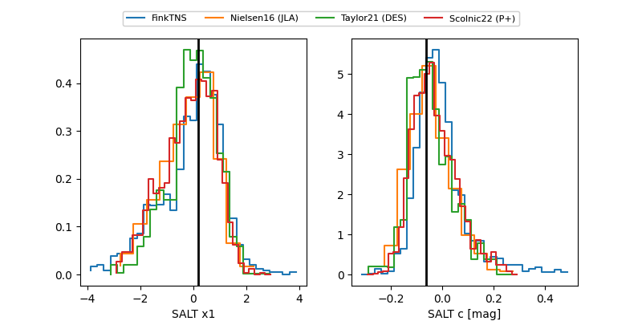

FINK: ZTF25abrpkwm
Lasair: ZTF25abrpkwm
ALeRCE: ZTF25abrpkwm
TNS: 2025xxw
YSE: 2025xxw
2025xxw (yse,tns)
ZTF25abrpkwm (ztf,fink)
equatorial (ra, dec) = (319.2153,+13.34779)
galactic (l, b) = (63.8048,-24.08317)

last ps1::r=20.52, ztfg=19.77, ztfr=19.88
1 ps1::r, 1 ztfg, 1 ztfr detections